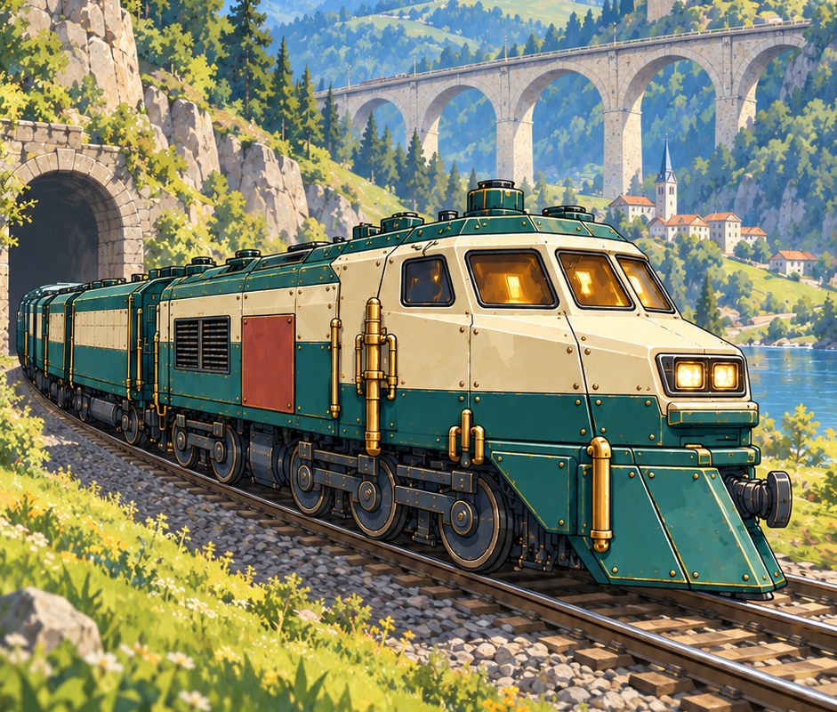

Press kit
Facts, screens, videos and marks for the studio and its games. Use them in articles, reviews and videos without asking first. Need something else — write to support@didogames.net.
Dido Games
A one-person independent studio. The games are made by an AI — code, art, audio, balance and text; the author sets the tasks, signs off the work and ships. The author is a game producer with more than ten years in game development.
Studio mark


The mark sits on dark #0B0D12, letters in #F0EAE1, the dot in #8FD8E8. Please don't recolour or stretch it.
The Last War: Train Defense
Out now · Google Play and the App Store · freeShort: the machine fires, the human decides — that's how the train works in the game, and how the game itself was made. Thirty years after the war, a handful of survivors drive an armored train toward the source of the winter while the machines of that war dive from the sky. The turrets aim themselves — your hands are busy catching chips, firing reactor abilities and picking cards: every rank offers three, you take one.
The Last War: Train Defense is an arcade AA-survival game. The train runs down the line while the camera holds it in place, the world scrolls past and enemies dive from above. There is no aiming: the anti-air turrets fire automatically. The player runs the harvest field — falling chips must be caught before they hit the ground; they charge the reactor.
In-run progression is a card draft. A run is one mission of ten waves; downed machines raise your rank, every rank freezes the fight and deals three cards, and a pick is mandatory. The cards are gun ladders: nine guns with five tiers each (mount, signature, path, path growth, limit). The mount puts the gun on the train, and tier three is the decision: the gun picks one of three directions in its own element, and the other two close for the rest of the mission. On top of that: four links that ignite by themselves once two partner guns share the train.
The node tree lives outside combat: the chips you harvest are spent on it between runs. The route covers ten biomes, each with its own enemies and weather; a mini-boss closes every mission and a phased boss closes every biome. The depot builds the train: a locomotive, wagons carrying reactor abilities, modules and trophy cores. Guns are not mounted there — they arrive as cards, mid-battle. Runs are free — no energy, no timers.
Key features
- Anti-air line: turrets fire on their own — the player owns harvesting, abilities and card picks
- Harvest field: chips must be caught before they land; they charge the reactor
- In-combat card draft: kills give rank, every rank freezes the fight and deals three cards
- Gun ladders: 9 guns, 5 tiers each — mount, signature, path, path growth, limit
- 27 paths: at tier three a gun picks one of three directions in its own element
- 9 passives with 3 tiers each
- 4 links: the partner is printed on the card in advance; the link ignites by itself and grows with both guns' tiers
- Card reroll: one free per run, then for a rewarded video, with the limit shown on the button
- 10 biomes × 10 missions = 100 missions; start from any unlocked biome
- The node tree lives outside combat: run chips are spent between runs
- Depot: 4 locomotives, wagons carrying reactor abilities, modules in 6 roles × 4 rarities, trophy cores
- Runs are free: no energy gate, no wait timers
- Portrait, one-finger controls; the campaign plays offline
Art, video, icon, screens
MP4 · 540 × 960


PNG · 941 × 1672
PNG · 1024 × 1024

Screens at 1080 × 1920, captured in game. Click for full size.


How the game was made
- Code. The combat loop, economy, saves, shop and UI were written by AI agents.
- Art. Image-generation models. The game's current style, Green Frontier — the train, enemies, biome backdrops, interface — was generated from a style brief and references and assembled into the game's atlases by scripts.
- Audio. Stable Audio Open — sound effects and music, generated locally. A few short UI ticks stayed procedural: the model handles sub-0.3s transients poorly.
- Balance. Wave curves, the economy, the gun ladders and the node tree were tuned by measurement probes — scenes that run the fight and count the numbers — and by checks on a device.
- Text. Story, logbook, interface strings and localization into 10 languages.
What AI did not do. The game engine, the fonts and third-party SDKs (ads, analytics, billing) are ordinary external components. The video is not generated footage but captures from the game: AI video was tried and rejected, it did not match the style. A human sets the task, signs off the work and checks the build on a device.
Ball Cats
In developmentDrop a cat into the jar. Two cats of the same level touch and become one bigger cat; eleven levels in all, Kitten up to King Cat, and two King Cats cancel each other out for good.
Around the runs sits a house: five rooms and twenty pieces of furniture. Buy a bed and a cat you raised moves in for good. Every day brings three tasks and one challenge everybody shares — the arena and the order of cats come from the date.
Video, icon, screens
MP4
PNG · 1024 × 1024

Screens at 480 × 854 from the build in development, Russian interface. Full size on request.


Aeryntha
In development · tech demoA magical island is fading. The player tames fairies whose powers open sealed paths: an element breaks a boulder, parts thorns, melts ice. A workshop and the Old Bridge rise from ruins, and a green wave rolls through the withered forest from a woken spring.
Play solo or with up to three friends: the world, the story and the building are shared, while fairies, satchel and friendships with villagers stay your own. The build has chapter one complete and chapter two in progress.
Tech demo, key art, concept art
MP4 · 1152 × 648

JPG · 1536 × 1024
PNG · 1486 × 510

Concept art from the game's art bible, 1536 × 1024. The build still looks like a prototype — in-game footage is in the tech demo only.